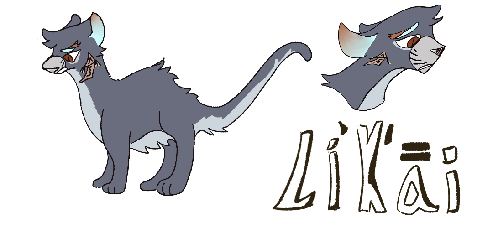
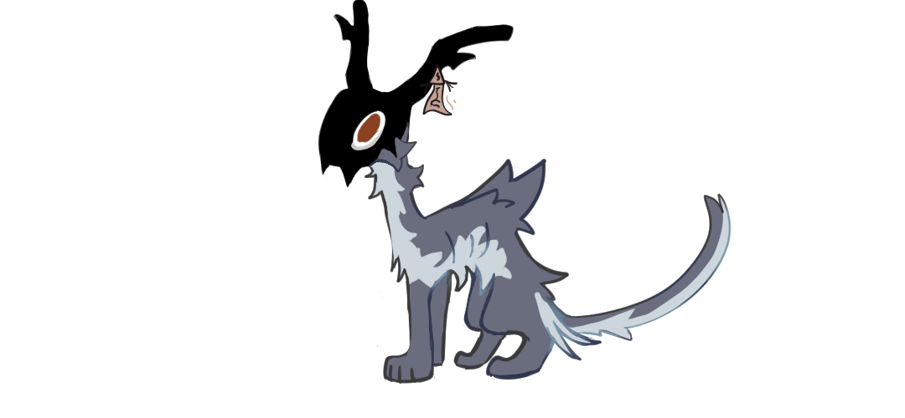

Likai

Age: they were 18. So young... too young for something like this, little soul.
Pronouns: he/they
Species: Unknown
Age: they were 18. So young... too young for something like this, little soul.
Pronouns: he/they
Species: Unknown

text

Scavenger Version
Clawing his way out of the dark and claustrophobic hole, they look around to find themself in a moonlit fenced-off area. There are small chiseled monuments of stone around him, seemingly placed in rows, with a filled-in pit in front of each. Looking behind him, he sees a similarly chiseled stone behind the trench he just dug out of. The air reeks of sorrow and grief. Where... just where is he?
((Keeping the cloak covering their body tight to their chest, he makes his way through the town. After being chased out of the previous town because of his rude awakening in what he now knows as a graveyard, they were not keen to show themselves to any others, just in case.
Relaxing temporarily once inside the forest nearby, the thick trees intertwining and letting little to no light through, they take stock of what they have. Reaching for their pistol, -wait. He doesn't have a pistol. They've never had a pistol. Now alert, they think back as far as they can...
-and it stops at the graveyard. Who are they, really?
Dying in pain and agony, betrayal from someone they thought- if not trusted, at least be easy enough to deceive- falling into that dark, dark, endless nothingness again,
[A warm summer ontop a cherry tree hill. The smile of someone truly trusted, a name long held close to their chest. "帮助, what's the issue?"
You say, "Nothing, D-]
Not now. It's too early for that, little soul.
-Likai wakes up gasping and shuddering for breath, all puffed-up fur and unseeing eyes. What.. where were they? Last they remembered, they had been mauled by Run... damn it! Wait, where were the other coven members?
Likai is featured in Round 2, where he was a Medusa. Though he came close to winning, he ultimately met his end when he was mauled by a Werewolf.
Likai is featured in Round 3 in Scavenger form, where he proceeded to forget how medium works like a loser. He was a Witch.